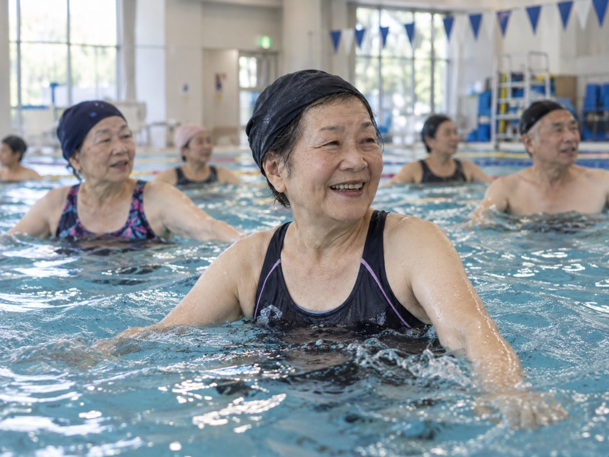
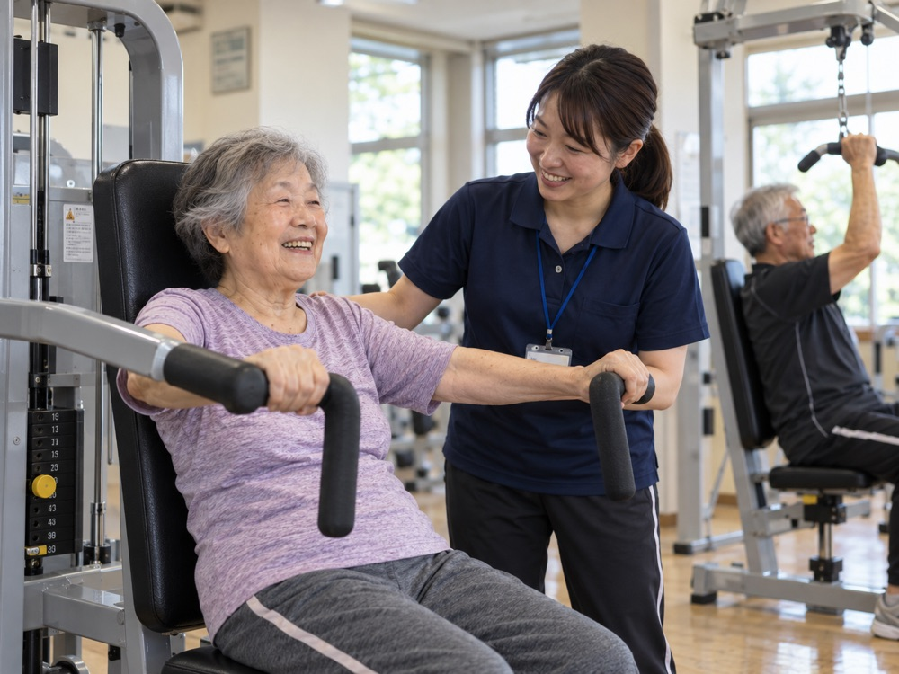

65歳〜74歳の方（65歳以上75歳未満）
月3,000円まで
非公式のデザインサンプル本作品は、南風原町の公開情報を参考に、LP工場が独自に制作した非公式のデザインサンプルです。南風原町からの委託・監修・承認を受けた公式ページではありません。
このページからは申し込めません。申込期間や利用条件は変更される可能性があります。最新の情報とお申し込みは、南風原町の公式ページ ↗でご確認ください。
南風原町 シニア運動習慣サポート事業 ｜自主制作・非公式の試作
利用までの流れFRAIL CHECK
チラシの「フレイルチェック」より。フレイルは、年齢とともに体や心の元気が弱まってきた状態のことです。
当てはまるものがあれば、体を動かし始めるきっかけにしてみませんか。このチェックは診断ではなく、参加するかどうかはご自身で決められます。体調に不安のある方は、かかりつけの医師にご相談ください。
CHOOSE YOUR MOVE
各運動施設等のメニューから、ご自身の興味や体力に合わせて選べます。

AI生成イメージ01
水の中で、気持ちよく体を動かす。
スイミングなど
AI生成イメージ02
自分の力に合わせて、体を整える。
マシントレーニングなど03
音やリズムに合わせて、からだを動かす。
エアロビクスなど写真はAI生成のイメージで、実在の施設・参加者の様子ではありません。実際の運動の内容は、運動施設等によって異なります（公式ページより）。
南風原町に住民登録のある、65歳以上の方が対象です。医師から運動を禁止されている方などは対象外です（対象外となる方）。
運動の内容は施設によって異なります。公式ページの施設一覧から各施設のホームページを確認するか、直接お問い合わせください。
電子申請・電話・窓口のいずれかで申し込みます（申込方法）。12月15日までの申込が対象です（何年度の受付かは要確認）。
利用が決まった方には、「チケット」と「自分応援！日記」が郵送で届きます。
チケットを運動施設等へ提出して利用します。1日〜15日の申込は翌月から、16日〜月末の申込は翌々月から、継続3か月です。チケットの該当月は、施設によって変わる場合があります。
「自分応援！日記」は、毎月ひと月分を記入したら、運動施設側へ渡して報告します。
OFFICIAL INFORMATION
南風原町に住民登録のある、65歳以上の方が対象です。町内の運動施設等の会費の一部を、町が補助します。
65歳〜74歳の方（65歳以上75歳未満）
月3,000円まで
75歳以上の方
月5,000円まで
3か月補助継続3か月分が対象
1人1回限り過去に本事業を利用した方は対象外
補助額は1か月あたりの上限（65歳以上75歳未満は月額上限3,000円、75歳以上は月額上限5,000円）で、利用料金ではありません。会費・支払方法は、各運動施設等へ直接ご確認ください。
ご注意：途中で運動施設等の利用をやめた場合でも、返金はありません。
1
スマートフォンなどから、公式の申込フォームで申請します。
デザインサンプルのため、申込フォームへのリンクは置いていません。電子申請は南風原町の公式ページから進めます。
2
地域包括支援センターへ電話し、必要事項を確認しながら申請できます。
電話番号：098-889-3534（地域包括支援センター）
3
役場2階の窓口で、必要事項を確認しながら申請できます。
南風原町字兼城686番地（庁舎2階）
12月15日までの
公式ページの記載は「4月は、予算確定後に事業開始になります。12月15日までの申込が対象です。」です。何年度の受付かは、公式ページか地域包括支援センターでご確認ください。
利用が決まった方には、「チケット」と「自分応援！日記」が郵送されます。
NON-OFFICIAL DESIGN SAMPLE
本作品は、南風原町の公開情報を参考に、LP工場が独自に制作した非公式のデザインサンプルです。南風原町からの委託・監修・承認を受けた公式ページではありません。
掲載内容は、南風原町の公式ページ（2026年8月31日更新）と町のチラシを、2026年10月に参照してまとめたものです。申込期間や利用条件は変更される可能性があります。
南風原町の公式ページで最新情報を確認する ↗